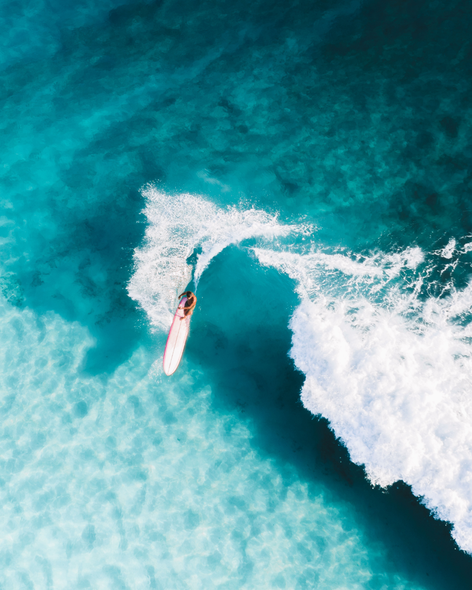
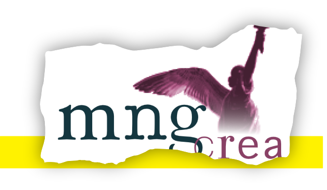
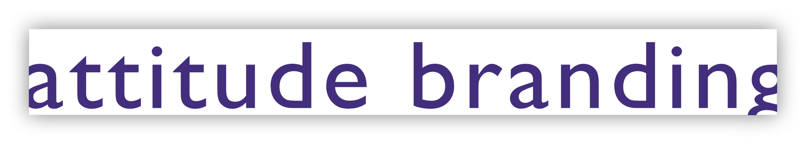
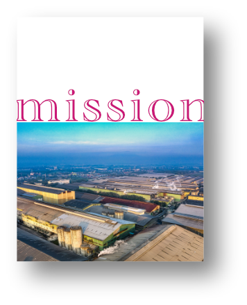
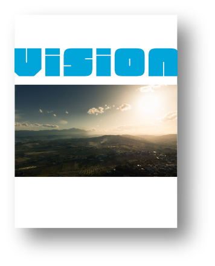
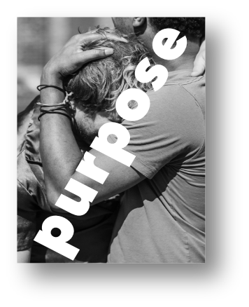
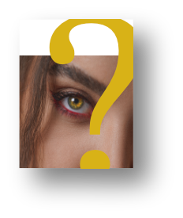
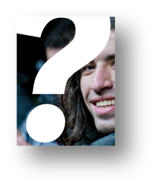
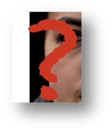

MNG-crea percorsi di marketing e comunicazione. Lo scopo è dotarsi di un'identità solida, connotata, consapevole.
Poi vale tutto.
I tool sono i linguaggi, tutti i linguaggi, in sinergia con i media e in funzione del pubblico di riferimento.
L'approccio è linguistico e narrativo: prima l'alfabeto, poi le parole. E infine le storie. Da scrivere, da interpretare e... da vivere.
La creatività ha bisogno di argini. Come per un fiume, consentono alle idee di scorrere più veloci e nella direzione giusta. Uno di questi argini sono i linguaggi e le norme antichissime che li governano.
Solidità linguistica significa solidità di pensiero, la cosa più efficace per trasmettere sempre il giusto messaggio.